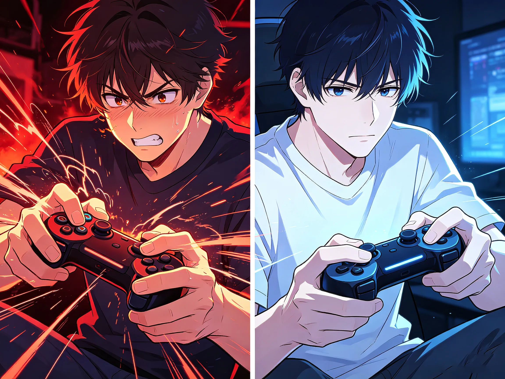
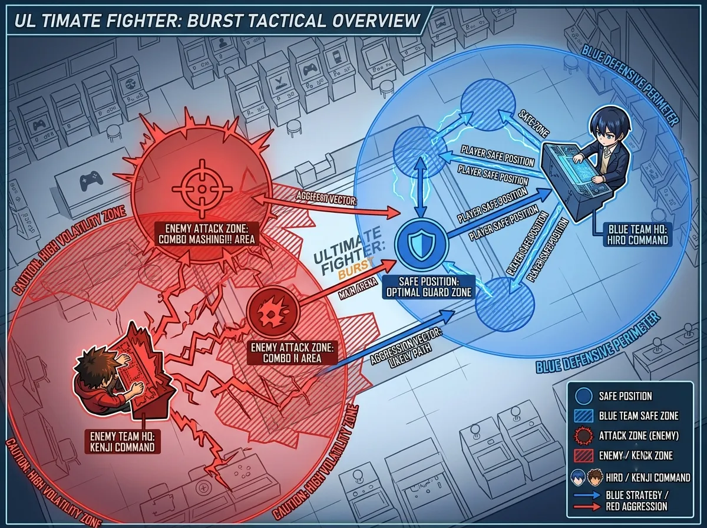
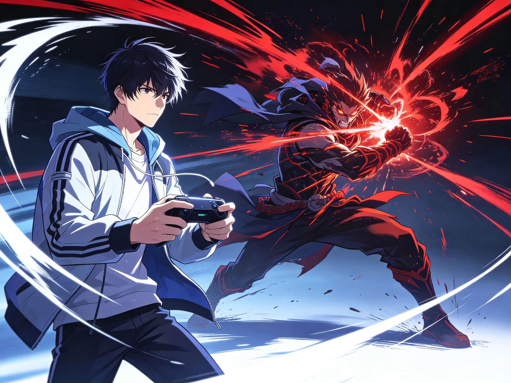
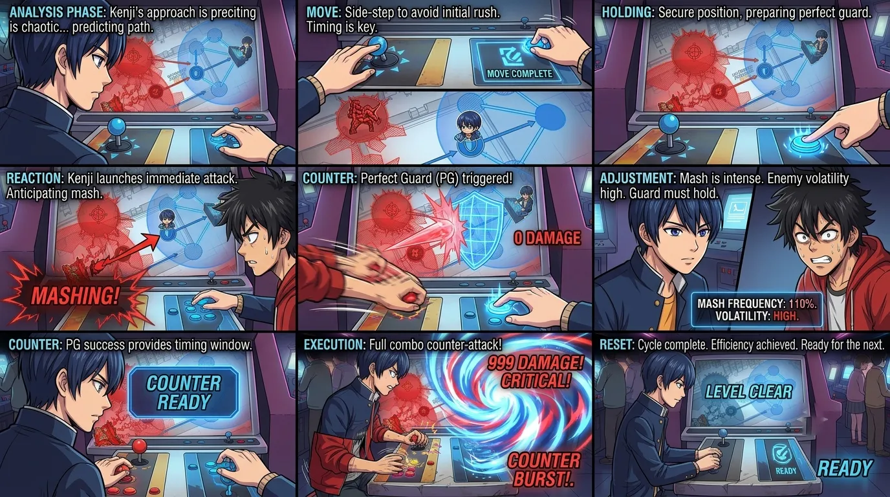

Positioning. Hitstop. Frame efficiency. Why you're slow when you think you're fast.
You press buttons fast. You spam attacks. Your fingers are moving constantly.
And you still lose on damage.
Here's the thing: speed doesn't win fights. Efficiency wins fights.
The difference between a good player and a great player isn't APM (actions per minute). It's knowing when not to press. When to wait. When to let the animation breathe. When to steal an extra hit that someone else would miss.
This guide is about that stolen damage. The invisible DPS that nobody talks about. The difference between "I'm doing fine" and "I just cleared 30 seconds faster."

You've probably done this before: you finish a fight, you feel like you were pressing buttons the whole time, and then you look at the time — or worse, the damage numbers — and you realize something is off.
You were fast. But you were wasting frames.
The combat engine in Love and Deepspace rewards intentionality, not frequency. Every button press initiates a sequence: animation start, hitbox active, hitstop, animation recovery, next action.
Most players spam through this entire sequence. They press the next button before the previous one has finished its job. They interrupt their own damage windows. They cancel recovery frames that could have been used for something else.
Speed isn't speed. Timing is speed.
Every action costs frames. The start-up frames (wind-up), the active frames (the actual hit), the recovery frames (putting your weapon back).
When you spam, you're not reducing the cost — you're interrupting active windows and creating new start-up frames. You're paying the tax multiple times for the same attack.
An efficient player pays once. A spammer pays twice. Sometimes three times.
Over a three-minute fight, that's minutes of wasted time.
You've seen it. Every time your attack lands on an enemy, the game freezes — for a split second — and the screen flashes. That brief pause is called hitstop.
Most players treat it as a visual effect. They wait for it to end. They resume pressing buttons.
That's a mistake.
Hitstop is not a punishment. It's a gift. During hitstop, the enemy is stunned. You are stunned. The game is frozen — but your button inputs are being queued.
In that split second of freeze, you can input your next command. Not just any command — the optimal command. By the time the game unfreezes, your next action is already registered. No delay. No gap. No wasted frames.
Step 1: Land an attack. The freeze happens. Do not wait for it to end.
Step 2: During the freeze, input your next action. Attack again. Dodge. Skill. Whatever is optimal.
Step 3: The game unfreezes. Your input executes immediately. You just saved 3-5 frames.
Do this consistently across a fight. Save 3 frames per hit. Multiply by 50 hits. That's 150 frames — 2.5 seconds of real time. Free. For doing nothing except not waiting.

This is the most underrated skill in the game. Not parrying. Not perfect dodging. Where you stand.
Stand in the wrong place, and you spend the entire fight dodging. Stand in the right place, and you never need to dodge at all.
That's the secret. Positioning is proactive defense. It's dodging before the attack even starts. It's standing where the enemy's attack isn't going to hit.
Most enemies in Love and Deepspace telegraph their attacks not just with animation, but with their body positioning. They lean. They shift weight. They turn. They give you 10-15 frames of warning before the attack even starts.
If you're paying attention, you can walk out of the attack zone. Not dodge. Walk. And keep attacking while you do it.
Each of these gives you time to reposition while maintaining your attack rhythm. You don't need to dodge. You don't need to break your combo. You just need to be somewhere else.

This is the hardest thing to learn. The most counterintuitive skill in the game:
Sometimes, you need to stop pressing buttons.
Here's why: certain enemy attacks have tracking. They adjust their trajectory based on your position. If you dodge early, they follow you. If you sprint, they catch you.
But if you wait — just for a fraction of a second — the tracking locks. The attack commits to a direction. And then you can avoid it with a single input.
That waiting is the difference between spending 20 frames of dodging and spending 5 frames of movement.
It's also the difference between interrupting your own combo and maintaining it.
These aren't "do nothing" moments. They're "gather information" moments. They're "prepare for the next cycle" moments. They're efficiency.

Let's put everything together into one actionable cycle:
This cycle takes about 4-5 seconds in real time. In that time, you've landed 4-5 hits, maintained safety, saved 2-3 dodges, and stolen about 20-30 frames of animation time.
That stolen time adds up. Over a full fight, that's 10-15 seconds of extra damage opportunity. That's the difference between a boss kill and a "almost got it."
Most players think combat is about speed. It's not. It's about efficiency.
Hitstop is free frames. Use them.
Positioning is free defense. Use it.
Waiting is free information. Use it.
The difference between winning and losing, between 30 seconds and 45 seconds, between "good enough" and "actually good," is not about pressing more buttons. It's about pressing the right buttons at the right time.
And sometimes, not pressing them at all.